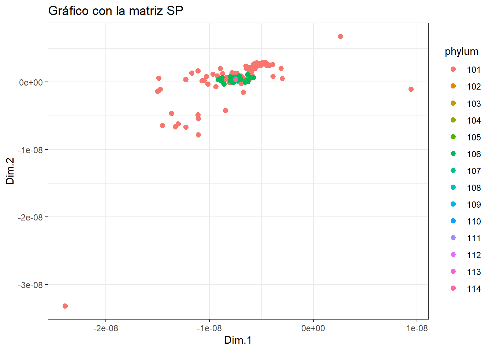

library(tidyverse)
library(ggplot2)
library(mds)Entrega5 AD: MDS
El metabolismo se caracteriza por reacciones químicas vinculadas entre sí, creando una compleja estructura de red. Una representación simplificada del metabolismo, que denominamos red metabólica abstracta, es un grafo en el que las vías metabólicas son nodos y existe una arista entre dos nodos si sus correspondientes vías comparten uno o más compuestos.
Para explorar los potenciales y límites de una representación tan básica, hemos empleado tres tipos de kernels (distancias entre grafos):
VH (Vertex histogram): solo tiene en cuenta si las etiquetas de los nodos de los grafos que se comparan son iguales o no.
SP (Shortest-Path): compara los grafos en función de sus caminos más cortos. Intuitivamente, esto significa medir lo fácil o difícil que es conectar, a través de compuestos compartidos, parejas de caminos en los dos grafos.
PM (Pyramid Match): mide la similitud de las características topológicas (por ejemplo, la conectividad) de los nodos con la misma etiqueta en los dos grafos comparados.
La práctica consiste en representar gráficamente (con solo 2 coordenadas principales) las matrices de similitud generadas por cada kernel coloreando los puntos de acuerdo al grupo de animales de acuerdo a su phylum.
Cargamos las librerías
Datos
Cargamos las matrices de datos
lista_animales = read.table("fileListANIMAL_phylum.txt")
nombres = lista_animales[,1]
phylum = lista_animales[,2]
datos_VH = read.table("ANIMALS-matrixVH.txt")
colnames(datos_VH) = nombres
rownames(datos_VH) = nombres
datos_SP = read.table("ANIMALS-matrixSP.txt")
colnames(datos_SP) = nombres
rownames(datos_SP) = nombres
datos_PM = read.table("ANIMALS-matrixPM.txt")
colnames(datos_PM) = nombres
rownames(datos_PM) = nombresA continucaicón cargamos los nombres de los phylums para luego poder etiquetar cada muestra con su correspondiente phylum.
names_phylum = read_table("names_phylum.txt", col_types = cols(numero = col_character(), phylum = col_factor())); names_phylum# A tibble: 14 × 2
numero phylum
<chr> <fct>
1 101 Vertebrates
2 102 Lancelet
3 103 Ascidians
4 104 Hechinoderms
5 105 Hemichordates
6 106 Arthropods
7 107 Nematodes
8 108 Annelids
9 109 Mollusks
10 110 Brachiopodas
11 111 Flatworms
12 112 Cnidarians
13 113 Placozoans
14 114 Poriferans VH (Vertex histogram)
Puesto que nos dan la matriz de similaridad, vamos a convertirla en una matriz de distancias.
dist_VH <- sqrt(2*(1-datos_VH))Tenemos la lista de animales con su phylum y tres matrices de similitud que podemos transformalas facilmente en matrices de distancia. Estas matrices son cuadradas de dimensión 370, que sería el número de observaciones del dataset original.
Realicemos el MDS:
vh.mds<-cmdscale(dist_VH,k=2)Con el resultado del análisis de MDS, creamos el siguiente tibble añadiendo una nueva variable tipo factor que nos indique a que phylum pertenece (14 niveles del 101 al 114). Y luego asignamos a cada factor el nombre del phylum.
tibble_vh.mds = as_tibble(vh.mds)
head(tibble_vh.mds) # mostramos como es el tibble# A tibble: 6 × 2
V1 V2
<dbl> <dbl>
1 -0.101 -0.00874
2 -0.101 -0.00874
3 -0.101 -0.00874
4 -0.101 -0.00874
5 -0.101 -0.00874
6 -0.101 -0.00874tibble_vh.mds = cbind(tibble_vh.mds, as.factor(phylum)) # añadimos la variable phylum como un factor
tibble_vh.mds <- tibble_vh.mds %>%
rename(X=V1, Y=V2, phylum = "as.factor(phylum)") # renombramos las variables
head(tibble_vh.mds) # mostramos como queda X Y phylum
1 -0.1007984 -0.008738438 101
2 -0.1007984 -0.008738438 101
3 -0.1007984 -0.008738438 101
4 -0.1007984 -0.008738438 101
5 -0.1007984 -0.008738438 101
6 -0.1007984 -0.008738438 101tibble_vh.mds = tibble_vh.mds %>% mutate(nombre_phylum = case_when(
phylum == 101 ~ names_phylum$phylum[1],
phylum == 102 ~ names_phylum$phylum[2],
phylum == 103 ~ names_phylum$phylum[3],
phylum == 104 ~ names_phylum$phylum[4],
phylum == 105 ~ names_phylum$phylum[5],
phylum == 106 ~ names_phylum$phylum[6],
phylum == 107 ~ names_phylum$phylum[7],
phylum == 108 ~ names_phylum$phylum[8],
phylum == 109 ~ names_phylum$phylum[9],
phylum == 110 ~ names_phylum$phylum[10],
phylum == 111 ~ names_phylum$phylum[11],
phylum == 112 ~ names_phylum$phylum[12],
phylum == 113 ~ names_phylum$phylum[13],
phylum == 114 ~ names_phylum$phylum[14])) # añadimos los nombres de los phylums
tibble_vh.mds %>% glimpse()Rows: 370
Columns: 4
$ X <dbl> -0.1007984, -0.1007984, -0.1007984, -0.1007984, -0.10079…
$ Y <dbl> -0.008738438, -0.008738438, -0.008738438, -0.008738438, …
$ phylum <fct> 101, 101, 101, 101, 101, 101, 101, 101, 101, 101, 101, 1…
$ nombre_phylum <fct> Vertebrates, Vertebrates, Vertebrates, Vertebrates, Vert…Finalmente representemos el gráfico con las coordenadas que hemos calculado anteriormente:
p <- ggplot(tibble_vh.mds, aes(x = X, y = Y, color = nombre_phylum)) +
geom_point(size = 2.2) +
labs(title = "Gráfico con la matriz VH", x = "Dim.1", y = "Dim.2") +
theme(legend.position = "right") +
theme_bw()
# Mostrar el gráfico
print(p)
Realicemos el mismo procedimiento para las otras dos matrices de similaridad.
SP (Shortest-Path)
Convertimos la matriz “ANIMALS-matrixSP” en una matriz de distancias.
dist_SP <- sqrt(2*(1-datos_SP))Realicemos el MDS:
sp.mds<-cmdscale(dist_SP,k=2)Con el resultado del análisis de MDS, creamos el tibble con el phylum.
tibble_sp.mds = as_tibble(sp.mds)
tibble_sp.mds = cbind(tibble_sp.mds, as.factor(phylum)) # añadimos la variable phylum como un factor
tibble_sp.mds <- tibble_sp.mds %>%
rename(X=V1, Y=V2, phylum = "as.factor(phylum)") # renombramos las variables
tibble_sp.mds = tibble_sp.mds %>% mutate(nombre_phylum = case_when(
phylum == 101 ~ names_phylum$phylum[1],
phylum == 102 ~ names_phylum$phylum[2],
phylum == 103 ~ names_phylum$phylum[3],
phylum == 104 ~ names_phylum$phylum[4],
phylum == 105 ~ names_phylum$phylum[5],
phylum == 106 ~ names_phylum$phylum[6],
phylum == 107 ~ names_phylum$phylum[7],
phylum == 108 ~ names_phylum$phylum[8],
phylum == 109 ~ names_phylum$phylum[9],
phylum == 110 ~ names_phylum$phylum[10],
phylum == 111 ~ names_phylum$phylum[11],
phylum == 112 ~ names_phylum$phylum[12],
phylum == 113 ~ names_phylum$phylum[13],
phylum == 114 ~ names_phylum$phylum[14])) # añadimos los nombres de los phylums
tibble_sp.mds %>% glimpse()Rows: 370
Columns: 4
$ X <dbl> -0.2540277, -0.2540277, -0.2540277, -0.2133845, -0.25402…
$ Y <dbl> -0.05265226, -0.05265226, -0.05265226, -0.05348145, -0.0…
$ phylum <fct> 101, 101, 101, 101, 101, 101, 101, 101, 101, 101, 101, 1…
$ nombre_phylum <fct> Vertebrates, Vertebrates, Vertebrates, Vertebrates, Vert…Finalmente representemos el gráfico con las coordenadas que hemos calculado anteriormente:
p <- ggplot(tibble_sp.mds, aes(x = X, y = Y, color = nombre_phylum)) +
geom_point(size = 2.2) +
labs(title = "Gráfico con la matriz SP", x = "Dim.1", y = "Dim.2") +
theme(legend.position = "right") +
theme_bw()
# Mostrar el gráfico
print(p)
PM (Pyramid Match)
Convertimos la matriz “ANIMALS-matrixPM” en una matriz de distancias.
dist_PM <- sqrt(2*(1-datos_PM))Realicemos el MDS:
pm.mds<-cmdscale(dist_PM,k=2)Con el resultado del análisis de MDS, creamos el siguiente tibble añadiendo una nueva variable tipo factor que nos indique a que phylum pertenece (14 niveles del 101 al 114).
Con el resultado del análisis de MDS, creamos el tibble con el phylum.
tibble_pm.mds = as.tibble(pm.mds)
tibble_pm.mds = cbind(tibble_pm.mds, as.factor(phylum)) # añadimos la variable phylum como un factor
tibble_pm.mds <- tibble_pm.mds %>%
rename(X=V1, Y=V2, phylum = "as.factor(phylum)") # renombramos las variables
tibble_pm.mds = tibble_pm.mds %>% mutate(nombre_phylum = case_when(
phylum == 101 ~ names_phylum$phylum[1],
phylum == 102 ~ names_phylum$phylum[2],
phylum == 103 ~ names_phylum$phylum[3],
phylum == 104 ~ names_phylum$phylum[4],
phylum == 105 ~ names_phylum$phylum[5],
phylum == 106 ~ names_phylum$phylum[6],
phylum == 107 ~ names_phylum$phylum[7],
phylum == 108 ~ names_phylum$phylum[8],
phylum == 109 ~ names_phylum$phylum[9],
phylum == 110 ~ names_phylum$phylum[10],
phylum == 111 ~ names_phylum$phylum[11],
phylum == 112 ~ names_phylum$phylum[12],
phylum == 113 ~ names_phylum$phylum[13],
phylum == 114 ~ names_phylum$phylum[14])) # añadimos los nombres de los phylums
tibble_pm.mds %>% glimpse()Rows: 370
Columns: 4
$ X <dbl> -0.1814346, -0.1814346, -0.1814346, -0.1280398, -0.18143…
$ Y <dbl> 0.003093899, 0.003093899, 0.003093899, 0.022347384, 0.00…
$ phylum <fct> 101, 101, 101, 101, 101, 101, 101, 101, 101, 101, 101, 1…
$ nombre_phylum <fct> Vertebrates, Vertebrates, Vertebrates, Vertebrates, Vert…Finalmente representemos el gráfico con las coordenadas que hemos calculado anteriormente:
p <- ggplot(tibble_pm.mds, aes(x = X, y = Y, color = nombre_phylum)) +
geom_point(size = 2.2) +
labs(title = "Gráfico con la matriz PM", x = "Dim.1", y = "Dim.2") +
theme(legend.position = "right") +
theme_bw()
# Mostrar el gráfico
print(p)
Conclusión
Realizando un MDS hemos podido reducir la dimensionalidad de las distancias observadas y hemos podido observar mediante una representación gráfica la dispersión de las muestras en función del phylum en dimensión 2, que se mantiene fiel de la estructura observada.